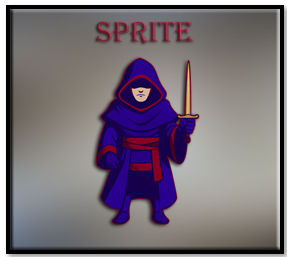
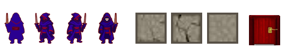
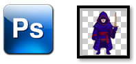

~2 Bringing in your Sprites~
1/19/2026

What are Sprites?
Sprites are your 2D visual Assets. They are images that you will use for the faces of your characters. It can also be used for items, backgrounds, and effects. In our last tutorial, we placed our smiley face sprite into the room; but that is not what you would usually do with a sprite. A sprite doesn’t do too much more than just sit there and look pretty.
To be able to get your assets to actually do anything, you will need to use both a sprite and an object. But before we can get to creating an object, let’s just start here with learning how to create the sprite (or face) for that object.
How to make a Sprite?
A sprite is easy to make, but you want to make it small. For example, our hero sprite is only 64px, but our wall sprite is going to be even smaller at 32px.

In Photoshop, you want to create each one of these sprites. The hero sprites, and door is 64px, and the wall object is 32px.

DownLoad the sprites into your Game Maker Folder.
You can find your game folder here on your computer. Remember to replace your own user name for the where it says YOUR_USER_NAME inside of the following link.
C:\Users\YOUR_USER_NAME\GameMakerProjects\My_First_Game_Project
With the sprites downloaded to your folder you can now right click and choose to create a sprite. You must create it this way, because game maker will be making a folder and adding its own stuff to it.

Choose Import, and select your wall image. At first it will say 64px, but it will change once it sees that the image you are trying to bring in is only 32p.

You can delete the sprite_hero_idle, little smiley face, as it might only tend to confuse, and muddle up your sprite folder. Right click and just delete it.

We want to create all of these sprites for our game. 3 wall sprites, a door sprite and 4 hero sprites. Right click on the sprite folder and create all of these sprites. Name them as we have here. Just recreate the steps for all of the sprites to bring them in.

And that is all there is to creating sprites for your game. Next we will be creating Objects.